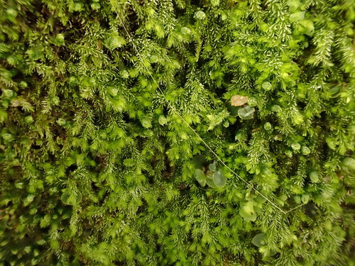

Blepharostomataceae
Ciliawort Family (common name for Blepharostoma)
Blepharostomataceae is a family of very small, often filamentous leafy liverworts (order Jungermanniales). They are characterized by both lateral leaves and underleaves being deeply dissected into 2-5 uniseriate cilia (single rows of cells). Leaf insertion is typically transverse, and the plants often appear nearly radially symmetrical (isophyllous).
Overview
The Blepharostomataceae family comprises just one main genus, Blepharostoma, containing only a few species of very small, delicate leafy liverworts. These plants are widespread, particularly common in boreal, arctic, and alpine regions of the Northern Hemisphere, but also occurring in temperate zones and tropical mountains globally. They typically grow in moist, shaded habitats, often forming thin, pale green or whitish-green wefts or turfs on rotting wood, peat, humus-rich soil, or rocks, frequently mixed with other bryophytes.
The most striking feature of Blepharostoma is its highly reduced and dissected vegetative structure. Both the lateral leaves and the underleaves are typically divided nearly to their base into 2-5 (usually 3-4) narrow, hair-like segments or cilia, each composed of just a single row of cells (uniseriate). Because the underleaves are similar in size and form to the lateral leaves, the shoots often appear almost radially symmetrical (isophyllous). The leaves are inserted transversely on the stem. This combination of minute size, isophyllous tendency, and leaves/underleaves reduced to uniseriate cilia makes the family distinctive, though easily overlooked or mistaken for algae or protonemata without magnification.
Quick Facts
- Scientific Name: Blepharostomataceae W.Frey & M.Stech
- Common Name: Ciliawort Family (for Blepharostoma)
- Number of Genera: 1 (Blepharostoma) - (Some classifications might include other very small genera).
- Number of Species: Approximately 3-5 species.
- Distribution: Widespread, particularly common in boreal, arctic, alpine regions; also temperate and tropical montane.
- Evolutionary Group: Bryophytes - Liverworts (Marchantiophyta) - Jungermanniopsida - Jungermanniales.
Key Characteristics
Note: Blepharostomataceae are minute leafy liverworts with leaves and underleaves dissected into uniseriate cilia.
Gametophyte (Leafy Shoot) Structure
The dominant phase is the minute leafy gametophyte:
- Form: Very small, slender, thread-like (filiform) shoots, forming delicate wefts or turfs. Typically whitish-green or pale green.
- Stems: Extremely thin.
- Leaves & Underleaves (Isophyllous/Subisophyllous): Both lateral leaves and underleaves are present, typically very similar in size and structure.
- Structure: Both are deeply dissected almost to the base into 2-5 (commonly 3-4) capillary segments or cilia. Each cilium is characteristically uniseriate (composed of a single row of cells) for most of its length.
- Insertion: Lateral leaf insertion is typically transverse.
- Branching: Often sparse, primarily lateral-intercalary.
- Asexual Reproduction: Gemmae are sometimes produced.
Reproductive Structures
Species are typically monoicous or dioicous.
- Antheridia: Male organs are small, borne in the axils of slightly modified bracts (androecia), usually forming small spikes.
- Archegonia: Female organs are terminal on main shoots or branches, surrounded by bracts (similar to vegetative leaves but sometimes larger) and a well-developed perianth. The perianth is typically long, cylindrical or fusiform, often deeply pleated (plicate) towards the mouth, which is contracted and usually fringed with cilia similar to the leaves.
Sporophyte
The sporophyte develops within the perianth:
- Foot: Embedded in the stem apex tissue.
- Seta: Elongates at maturity, composed of relatively few cell rows.
- Capsule: Small, ovoid, typically dark, dehiscing via 4 valves. Capsule wall is bistratose.
Spores and Elaters
Contained within the capsule.
- Spores: Very small, spherical, finely papillose or nearly smooth.
- Elaters: Present, slender, typically with 2 spiral thickenings.
Field Identification
Identifying Blepharostomataceae requires magnification due to the minute size of the plants. Key features are the filamentous appearance and the structure of the leaves/underleaves.
Primary Identification Features (Requires Magnification)
- Minute, Filamentous Appearance: Plants look like tiny, pale threads or hairs forming wefts.
- Leaves & Underleaves Dissected into Uniseriate Cilia: Both lateral leaves and underleaves are divided into 2-5 segments composed of single rows of cells.
- Isophyllous/Subisophyllous Habit: Underleaves are large and similar in form to the lateral leaves.
- Transverse Leaf Insertion: Leaves attached straight across the stem.
- Terminal Perianth (if fertile): A long, often ciliate perianth located at the tip of shoots/branches.
Secondary Identification Features
- Habitat: Often on decaying wood, peat, or humus in cool, moist, often boreal/alpine/subalpine environments.
- Whitish-Green Coloration: Often pale or somewhat translucent.
Seasonal Identification Tips
- Difficult to Observe Seasonally: Best identified by vegetative features using magnification whenever found in suitable habitats. Perianths may be more obvious when present.
Common Confusion Points
Blepharostoma might be confused with:
- Pseudolepicoleaceae (e.g., Temnoma): Also have divided leaves/underleaves and often appear isophyllous, but are generally larger plants, and the leaf segments are typically broader (not strictly uniseriate cilia).
- Trichocoleaceae (Trichocolea): Much larger plants with a dense 'woolly' appearance due to branched cilia, and possess a perigynium, not a perianth.
- Highly Divided Lepidoziaceae (e.g., Kurzia, Telaranea): Can be very fine and filamentous. Kurzia often has broader leaf bases and incubous insertion. Telaranea has uniseriate segments but typically incubous insertion and perianths on short ventral branches.
- Filamentous Algae / Moss Protonemata: Lack the organized structure of stem, leaves, underleaves, rhizoids, and reproductive structures seen in Blepharostoma under magnification.
Key differentiator: The combination of minute size + transverse insertion + leaves AND underleaves deeply divided into uniseriate cilia + isophyllous tendency + terminal perianth is unique to Blepharostomataceae.
Field Guide Quick Reference (Microscope Needed)
Look For:
- Minute, filamentous, pale wefts
- Leaves transversely inserted
- Leaves & Underleaves similar (isophyllous)
- Both divided into uniseriate cilia (2-5)
- Long, ciliate perianth terminal
- Habitat: logs, peat, humus (often cool regions)
Key Distinctions:
- Segments uniseriate (unlike Pseudolepicoleaceae)
- Much smaller & less hairy than Trichocolea
- Has perianth (unlike Trichocolea)
- Insertion transverse (unlike incubous Lepidoziaceae)
Notable Examples
The family primarily consists of the genus Blepharostoma.

Blepharostoma trichophyllum
(Hairy Threadwort / Ciliawort)
A cosmopolitan species, very common in boreal, arctic, and alpine regions of the Northern Hemisphere, also found in temperate zones and mountains elsewhere. It is the archetypal member of the family, showing the characteristic minute size, transverse insertion, and leaves/underleaves divided into 3-4 uniseriate cilia. Commonly found on rotting logs and peat.
Phylogeny and Classification
Blepharostomataceae is a small family whose phylogenetic position within the Jungermanniales has been considered close to other families with highly divided leaves and tendencies towards isophylly, such as Pseudolepicoleaceae, Trichocoleaceae, and Herbertaceae. Molecular data often support a relationship within this broader group, sometimes placed near the base of certain lineages within the suborder Jungermanniineae or potentially related to the Trichocoleales/Herbertales lineages if those are recognized as separate orders.
The family represents an extreme of reduction and specialization in leafy liverwort morphology, with the vegetative body reduced to fine, filamentous structures. This morphology is likely an adaptation for growth in specific microhabitats, perhaps facilitating water absorption or allowing growth in small crevices or amongst other bryophytes. Despite its simple appearance, it possesses the fundamental leafy liverwort organisation and reproductive structures (like the perianth).
Position in Plant Phylogeny
- Kingdom: Plantae
- Division: Marchantiophyta (Liverworts)
- Class: Jungermanniopsida
- Order: Jungermanniales
- Family: Blepharostomataceae
- (Relationships often considered close to Pseudolepicoleaceae, Trichocoleaceae, Herbertaceae)
Evolutionary Significance
Blepharostomataceae is significant for:
- Morphological Reduction: Exemplifies extreme reduction of leaf structure to uniseriate filaments within leafy liverworts.
- Isophylly: Shows a strong tendency towards radial symmetry with similar leaves and underleaves.
- Phylogenetic Relationships: Helps understand the relationships among liverwort groups characterized by divided appendages and isophyllous tendencies.
- Adaptation to Microhabitats: Its structure likely represents adaptation to specific ecological niches requiring small size and potentially high surface area for water/nutrient absorption.